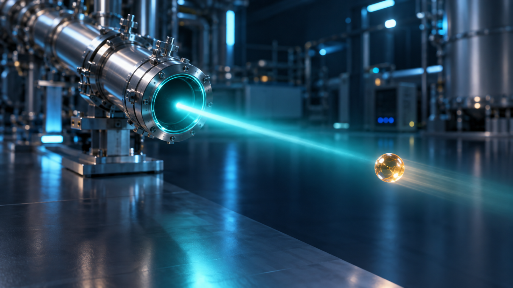
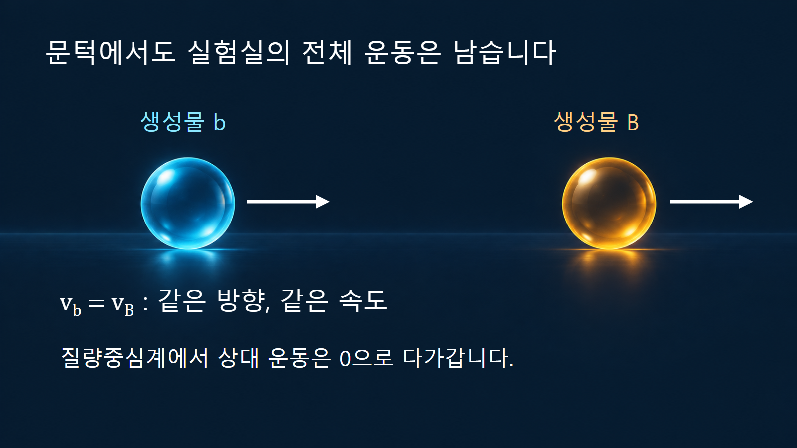
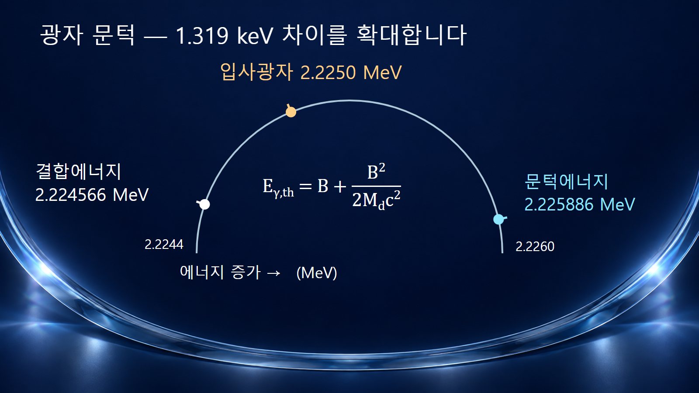

질량·에너지와 핵반응 · 027
문턱에너지
흡열 핵반응이 운동량 보존까지 만족하며 시작되는 최소 입사에너지

흡열 핵반응의 문턱에너지는 특정 반응채널이 에너지와 운동량 보존을 만족하며 열릴 수 있는 최소 입사에너지입니다. 정지한 표적에 입자를 쏘면 처음부터 계 전체에 운동량이 있으므로, 입사 운동에너지를 모두 생성물의 정지에너지 증가에 쓸 수 없습니다. 이 때문에 일반적으로 문턱은 음의 Q값의 절댓값보다 높습니다.
1. 최종 입자를 모두 멈추게 할 수 없는 이유
입사입자는 에너지와 운동량을 함께 가져옵니다. 표적이 실험실에서 처음에 정지해 있어도 반응계의 전체 운동량은 0이 아닙니다. 반응 뒤 모든 생성물이 실험실에서 멈춘다고 가정하면 이 운동량이 사라져 보존법칙을 어깁니다. 최소 에너지 조건에서도 생성물 전체가 함께 움직이는 데 필요한 운동에너지가 남습니다.
질량중심계는 계의 전체 운동량이 0이 되는 기준계입니다. 두 생성물의 문턱 상태에서는 이 기준계에서 두 입자의 상대 운동이 0으로 다가갑니다. 반면 실험실계에서는 두 입자가 같은 속도로 앞으로 움직이는 극한에 해당합니다. 문턱에서 운동이 사라진다는 말은 어떤 기준계의 어떤 운동을 뜻하는지 밝혀야 합니다.

2. 정지한 자유 표적에 대한 문턱식
입사입자의 정지질량을 ma, 표적의 정지질량을 M, 지정한 채널의 Q값을 Q < 0으로 놓습니다. 최종 상태가 질량을 가진 두 입자로 이루어지고 표적이 처음에 정지해 있으면, 상대론적 에너지·운동량 보존으로 Tth = −Q(1 + ma/M) + Q2/(2Mc2)를 얻습니다. Tth는 입사입자의 전체에너지가 아니라 운동에너지입니다.
유도에서는 초기 계의 불변에너지 제곱을 (ma + M)2c4 + 2Mc2T로 씁니다. 문턱에서 이 값은 최종 두 입자의 정지질량 합에 c2를 곱한 값의 제곱과 같습니다. 최종 질량 합을 ma + M − Q/c2로 바꾸고 정리하면 위 식이 됩니다.
|Q|가 표적 정지에너지보다 충분히 작으면 마지막 항을 생략하여 Tth ≈ |Q|(1 + ma/M)로 계산합니다. 무거운 표적일수록 질량비가 작아 |Q|와 문턱의 차이가 줄어듭니다. 이 근사식을 광자에 기계적으로 적용하여 작은 반동 보정까지 0으로 버리지 않도록 주의합니다.
3. 예시 1: 탄소-12를 첫 들뜬상태로 만드는 중성자
반응 n + 12C → n + 12C*에서 별표는 들뜬상태를 뜻합니다. 채택준위 평가에서 첫 2+ 준위는 4439.82 ± 0.21 keV입니다. [2] 따라서 이 채널의 Q는 −4.43982 MeV로 놓습니다. 감마선 표의 4438.91 keV는 들뜸에너지와 별개의 방출 광자 에너지이며, 반동 보정이 반영되어 있으므로 대신 대입하지 않습니다.
계산 규모를 확인하기 위해 중성자 질량을 1.008665 u, 표적 질량을 약 12 u로 두면 비상대론적 문턱은 약 4.813 MeV입니다. 상대론적 보정항 약 0.000882 MeV를 더하면 Tth ≈ 4.814 MeV가 됩니다. 표적 질량의 전자 보정을 더 정밀하게 처리해도 여기서 제시한 소수 셋째 자리의 결론은 같습니다.
따라서 입사 중성자가 4.60 MeV이면 들뜸에너지 4.43982 MeV보다 크더라도 이 채널에는 부족합니다. 4.90 MeV이면 운동학적으로는 채널이 열릴 수 있습니다. 두 번째 판단은 충분히 큰 반응단면적이나 많은 감마선 계수율을 보장하는 판단이 아닙니다.
4. 예시 2: 중수소를 분해하는 광자도 반동을 남깁니다
정지한 자유 중수소핵에 감마선이 입사하는 γ + d → p + n을 생각합니다. 광자는 정지질량이 0이므로 입사에너지 전체가 Eγ이며, 운동량 Eγ/c를 가집니다. 중수소 결합에너지를 B, 질량을 Md로 두면 문턱은 Eγ,th = B + B2/(2Mdc2)입니다.
평가된 입자 질량으로 구한 B ≈ 2.224566 MeV와 Mdc2 ≈ 1875.613 MeV를 대입하면 반동 보정은 약 0.001319 MeV, 즉 1.319 keV입니다. [3] 그 결과 문턱은 약 2.225886 MeV입니다. 결합에너지보다 조금 더 필요한 이유는 광자가 가져온 운동량이 최종 양성자·중성자 계에 남기 때문입니다.
예를 들어 2.2250 MeV 광자는 결합에너지보다는 크지만 이 자유 중수소핵 반응의 문턱에는 못 미칩니다. 이 계산은 핵 하나를 자유 표적으로 다루는 이상화이며, 주변 물질이 에너지·운동량을 함께 주고받는 별도의 다체 과정을 같은 식으로 판정하지 않습니다.

5. 문턱·쿨롱 장벽·검출 기준은 서로 다릅니다
| 경계 | 판단하는 질문 | 자료와 해석 |
|---|---|---|
| 운동학적 문턱 | 지정한 최종 상태가 보존법칙을 만족할 수 있습니까? | 질량·들뜸에너지·입사 조건으로 계산합니다. |
| 쿨롱 장벽 | 하전입자가 핵력 작용 범위까지 접근하기 얼마나 어렵습니까? | 전하와 상호작용 퍼텐셜이 중요하며, 터널링 때문에 단순한 절대 차단선은 아닙니다. |
| 반응단면적의 크기 | 열린 채널에서 반응이 얼마나 잘 일어납니까? | 공명·선택규칙 등 동역학과 평가·실험 자료가 필요합니다. |
| 검출 또는 장비 설정 문턱 | 장비가 신호를 기록할 만큼 충분합니까? | 효율·배경·전자회로 설정에 좌우되며 핵반응 고유의 문턱과 같지 않습니다. |
Q가 양수인 채널에는 흡열 질량 증가 때문에 요구되는 문턱이 없습니다. 그렇다고 모든 낮은 입사에너지에서 유의미한 반응이 보장되지는 않습니다. 반응 가능 여부를 묻는 계산과 발생률을 묻는 계산을 구분해야 합니다.
6. 적용 범위를 바꾸면 식도 다시 확인합니다
위 식은 정지한 자유 표적을 전제로 합니다. 표적 자체가 움직이는 충돌빔이나 열운동을 자세히 다루는 경우에는 두 입자의 상대 운동과 입사 방향을 함께 고려합니다. 두 최종 입자 대신 여러 입자가 나오는 경우에도 불변에너지로 가능한 최소 질량 합을 따질 수 있지만, 에너지 배분과 문턱 부근의 반응 확률은 더 복잡해집니다.
생성핵의 들뜬준위를 바꾸면 채널의 Q와 문턱이 함께 바뀝니다. 질량표의 바닥상태 값으로 문턱을 구한 뒤, 들뜬상태를 측정하는 실험과 그대로 비교해서는 안 됩니다. 계산서에는 표적의 정지 여부, 최종 준위, 질량 자료의 종류, 상대론적 보정의 포함 여부를 남겨야 합니다.
7. 작은 차이가 반응의 가능 여부를 바꿉니다
탄소 예시의 4.60 MeV 중성자와 중수소 예시의 2.2250 MeV 광자는 모두 단순한 내부 에너지 비용보다 높은 에너지를 갖습니다. 그러나 전체 운동량을 함께 보존하면 둘 다 해당 반응의 문턱 아래에 놓입니다. 문턱 문제에서는 에너지 한 항만 비교하지 말고, 초기 조건과 생성물 전체를 포함한 보존식으로 판단합니다.
문턱 바로 위에서는 운동학적으로 허용된다는 결론까지만 얻습니다. 실제 실험 계획에서는 입사빔의 에너지 분포, 표적 내 에너지 손실, 원하는 채널의 단면적을 추가해야 관측 가능한 신호를 예상할 수 있습니다.